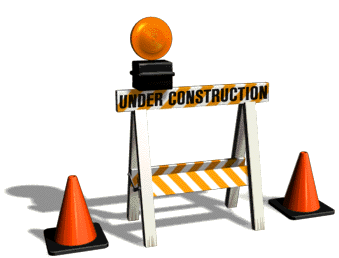

Reference Points
TL;DR: It all started with a grate and a vague desire to pay homage to designers that deeply affected my early framing of what 'Good Design' was. Reference Points is a work-in-progress exploring the general notion of 'Supernormal' objects and embedded memories in physical forms. I'm slightly obsessed with the fact that hundreds of thousands of people touch the same objects every day, step foot on the same surfaces every day, interact with urban infrastructures that are completely anonymous in every single way, every day.
The overall plan is to document many examples of urban infrastructures that are glossed over, and represent them in new and unexpected physical forms. Currently, some major points of focus are rails on trains, drainage grating on sidewalks, mobile police fences, and construction scaffolding.
—
More Later  Be Patient.
{% include header.html %}